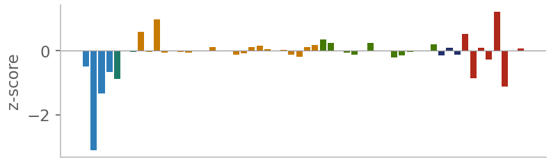

Processing pipeline: from IQ samples to a decision
Real model, one real window: a DRFM jammer copying an LFM radar, 18 dB
1CUT ONE EMITTER
The detector boxes an emitter on the wideband spectrogram. Its band is shifted to 0 Hz, filtered, and cut into
160 µs windows; only windows where it is actually on are kept.
512 complex samples · 3.2 MS/s · ±1.6 MHz
Wideband captureseconds of IQ, many emitters
Box → shift → filterone emitter, centred, rest removed
Active windowsgaps between pulses skipped
→
2NORMALISE
Every window gets zero mean and unit spread, so weak and strong signals look the same size: the model judges shape, not loudness.
x ← (x − mean) / std

→
3TIME–FREQUENCY PICTURE
A short-time Fourier transform turns the window into a picture: 64 frequency rows (50 kHz each) across time.
Here: the radar chirp and its delayed jammer copy.
STFT, n_fft = 64, magnitude

→
4TWO LEARNED BRANCHES
IQ branch1-D conv + two dilated convs (×2, ×4): sees ~43 samples at once, keeps full time detail · 128 features
STFT branch2-D convs on the picture: shapes, sweeps, hops · 64 features, stretched back to full time
Fused sequence192 features at each of the 512 time steps
5ATTENTION POOLING
A score per time step, from the features and the signal power, then softmax: the model
looks where the signal is and ignores empty time. 512 steps → one 192-number summary.

→
6EXPERT + PHYSICS VIEWS
Measurements a signal analyst would make, added beside the summary:
104 expert (amplitude rings, echoes), the whole-window spectrum, and 56 physics numbers
(power-law lines, symbol clock, frequency wobble, envelope, OFDM echo, on/off timing).

→
760 YES / NO ANSWERS
Two dense layers (256 → 60), then a separate sigmoid for each class, trained with binary cross-entropy:
classes do not compete, so two can be true at once. Every class ≥ 0.5 is present.

→
8MULTI-LABEL DECISION
Track vote: all windows of one emitter, averaged as log-odds. Then the rules:
DRFM + radar → report both: “DRFM jammer copying an LFM radar”.
LoRa vs swept jammer → width and chirp wraps over time decide.
CW radar vs tone jammer → context: did it appear on top of a signal?
QAM / APSK / 8–32PSK size → the group, likeliest size as a hint.
Otherwise → the top class, with a band: high / medium / uncertain.